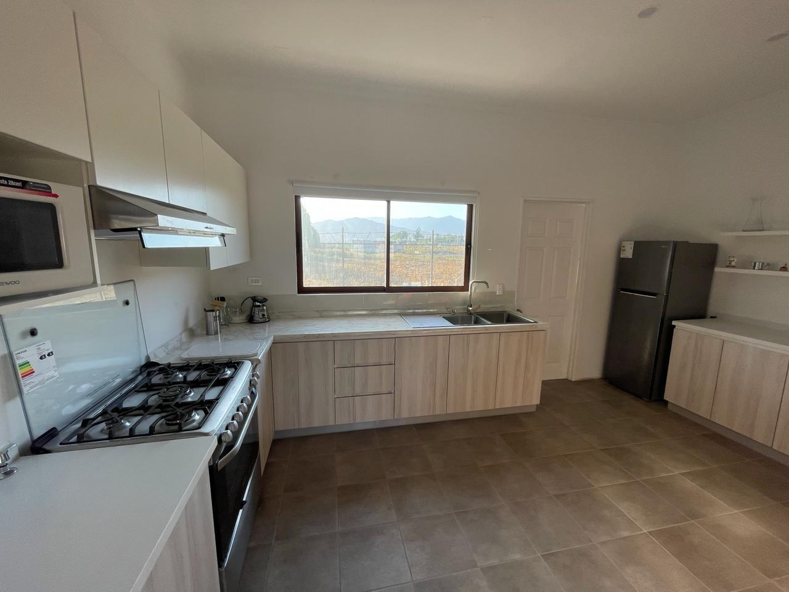

Nuestras Obras




Este proyecto consistió en diseñar e instalar 3 walking closet funcionales y modernos en los dormitorios para la vivienda unifamiliar. Utilizamos melamina de alta calidad marca masisa en color blanco mate, con detalles en melamina de color madera. El diseño incluye compartimentos amplios, cajones con sistema cierre suave para mejor versatilidad y amplio espacio para colgar ropa. El espacio limitado presentó un reto interesante, que solucionamos maximizando la capacidad de almacenamiento sin comprometer el diseño estético. El cliente quedó encantado con el resultado final: un closet que combina funcionalidad y estilo a la perfección.


Este proyecto transformó una cocina estándar en un espacio moderno y funcional. Se utilizaron materiales resistentes a la humedad y de fácil limpieza, ideales para el uso diario. El diseño incluyó armarios superiores e inferiores con acabados en melamina de alta calidad y un área de almacenamiento optimizada. Los detalles en aluminio y los colores neutros añadieron un toque contemporáneo. Este proyecto fue diseñado para combinar estilo y practicidad, logrando un ambiente acogedor y funcional para la familia.

Este proyecto involucró la remodelación de una cocina compacta, adaptándola para maximizar el espacio disponible. Se emplearon superficies de cuarzo en tonos claros para las cubiertas, creando un ambiente luminoso y elegante. Los módulos personalizados brindan almacenamiento eficiente, mientras que la integración de electrodomésticos permitió mantener un diseño limpio y organizado. Un proyecto pensado para ofrecer comodidad y estética en un espacio reducido.


Diseñamos, fabricamos e instalamos esta cocina estilo vintage, combinando funcionalidad y estética. Utilizamos mobiliario en tonos mate, pintado con acabados de alta calidad de la marca Milesi, líder europea. Las cubiertas de cuarzo Calacatta aportan durabilidad y sofisticación, mientras que la iluminación LED realza el diseño. Una cocina práctica y contemporánea, pensada para el día a día.


En este proyecto comercial, Fabricamos e instalamos mobiliario funcional para una farmacia, priorizando la organización y el fácil acceso a los productos. Utilizamos materiales de alta resistencia con acabados en blanco y verde, reflejando la identidad de la marca. El diseño incluyó estanterías modulares, vitrinas y mostradores con gran capacidad de almacenamiento. Este espacio combina eficiencia operativa con un ambiente agradable para los clientes.


Este proyecto consistió en crear un ambiente acogedor para un local de repostería. Diseñamos muebles personalizados, incluyendo vitrinas exhibidoras con vidrio templado para destacar los productos. Los colores cálidos y los acabados en madera natural añadieron un toque artesanal al espacio. Además, incorporamos áreas de almacenamiento oculto para mantener el orden y facilitar las operaciones diarias. Un espacio ideal para resaltar la dulzura y calidad de los productos.


Este proyecto consistió en diseñar e instalar un escritorio personalizado, ideal para un espacio de trabajo moderno y ergonómico. Fabricado con melamina de alta resistencia en tonos naturales, el diseño incluye compartimentos funcionales para almacenamiento y una superficie amplia para trabajar cómodamente. Se añadieron detalles en metal negro mate para un toque industrial. El resultado es un escritorio que combina practicidad, durabilidad y estilo, perfecto para el uso diario.


En este proyecto desarrollamos mobiliario único para un espacio comercial, adaptando el diseño a las necesidades específicas del cliente. Utilizamos materiales de primera calidad, como madera natural y Detalles Lacados, para crear un ambiente acogedor y profesional. Los muebles personalizados incluyen estantes modulares, mesas de exhibición y áreas de almacenamiento oculto. Este diseño logra un balance perfecto entre funcionalidad y estética, reflejando la identidad de la marca.


Diseñamos y fabricamos mobiliario exclusivo para una cafetería, priorizando la funcionalidad y la estética. Incorporamos madera natural y detalles metálicos para un ambiente cálido y acogedor. Los muebles incluyen estanterías, barras de atención y áreas de almacenamiento optimizadas para mejorar la experiencia del cliente y la eficiencia del negocio.

Creamos un walk-in closet personalizado con una distribución estratégica para maximizar el almacenamiento. Se utilizaron materiales de alta calidad, con acabados elegantes y modernos. El diseño incluye cajoneras, compartimentos especiales y espacios adaptados a las necesidades del cliente, garantizando orden y estilo.


Desarrollamos e instalamos mobiliario a medida para el lobby de un edificio corporativo, logrando un ambiente sofisticado y funcional. Se emplearon materiales de alta resistencia con acabados premium. El mobiliario incluye recepciones, áreas de espera y detalles decorativos que refuerzan la identidad visual del espacio.
Desarrollamos e instalamos un elegante mobiliario a medida para la recepcion de una tienda, combinando funcionalidad y diseño sofisticado. Se emplearon materiales de alta resistencia con acabados premium, asegurando durabilidad y estética. La propuesta incluyó recepciones personalizadas, áreas de espera con confort optimizado y detalles decorativos alineados con la identidad visual del espacio.


Creamos e instalamos mobiliario corporativo a medida para la sala de directorio y oficinas de LG, logrando un entorno de trabajo moderno y funcional. Se usaron materiales de alta calidad con acabados de primera línea para garantizar resistencia y diseño sofisticado. Incluye escritorios ejecutivos, mesas de reuniones y espacios de almacenamiento optimizados.


Diseñamos e instalamos una góndola exhibidora personalizada para LG en Ripley Valparaíso. Se priorizó un diseño atractivo y funcional, con materiales duraderos y acabados de alta calidad. La exhibición resalta los productos de la marca, optimizando la experiencia del cliente dentro de la tienda.


Desarrollamos e instalamos el mobiliario para la tienda Dulcentorno en Mall Plaza Egaña, logrando un ambiente cálido y acogedor que potencia la experiencia del cliente. Se utilizaron materiales resistentes con acabados detallados para resaltar la identidad de la marca.

Este proyecto consistió en transformar una vivienda en un espacio único y moderno, combinando elementos contemporáneos y rústicos. Se diseñó un ambiente cálido y funcional, utilizando materiales de primera calidad y detalles personalizados que resaltan la identidad y el estilo del hogar.